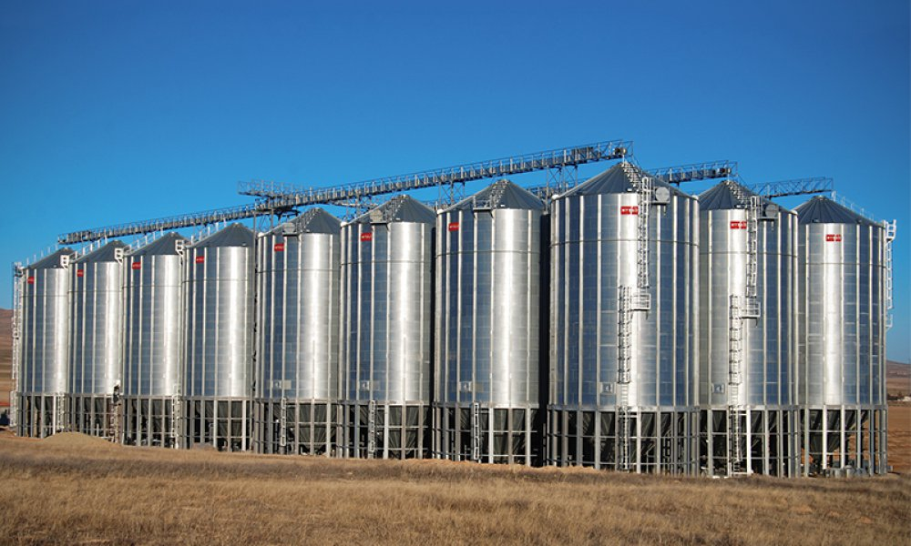
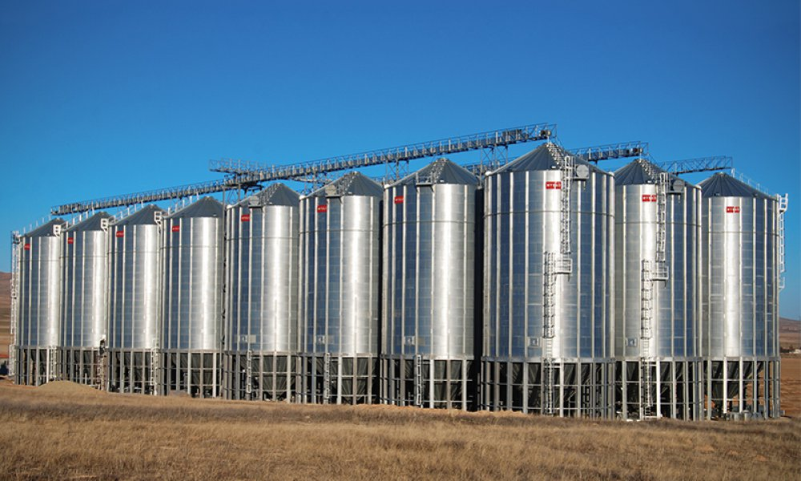

MSGSE
Grain Storage Systems
Mysilo EuropeMSGSE are official representatives of Mysilo Corporation in Europe. We are selling and installing grain storage equipment
About companyAbout Company
Mysilo has been established in 2000 under the roof of SF Group with the 40 years of
industry and manufacturing experience to produce grain storage silos and handling system
equipment and since that time till today Mysilo has become an expert and leading
organization as young, innovative and ever grooving basis by finalizing more than 2.000
projects for over 1500 customers in 60 countries and 5 continents. Today, Mysilo is one
of the leading and reputable companies of the world by having sustainable growth since
the establishment.
There are three companies in the SF Group; Siloport Grain Storage Systems Inc. Co.
manufacturer, Silopark Construction & Machine Industry Inc. Co. Contracting and sales
operations in Turkey, Mysilo Grain Storage Systems Inc. Co. overseas operations Middle
East.
A quick and perfect production is guaranteed by the updated manufacturing lines
according to the latest technology consisted by CNC, laser cutting, robotic welding and
injection systems and along with the high quality raw material supplied from the world's
best steel factories . One of the features making Mysilo different than the competitors
is providing the design and product solutions according to the different standards and
static calculations.
5
continents
Mysilo responds the needs of storage in 5 continents in the world. We are moving to be the making of the most assertive and the most efficient company in the sector, in Africa, America, Asia, Europe and Australia.
60+
countries
Mysilo provides the quality to you both pre-sales and after-sales with our extensive dealer in more than 60 counteries and our effective sales staff approaching to your Project solution-oriented.
1500+
customers
Mysilo is proud to present professional infrastructure that can respond to the growing storage needs of the day by day with power given by the completed over 2000 projects to you.
2000+
projects
Mysilo is proud to present professional infrastructure that can respond to the growing storage needs of the day by day with power given by the completed over 2000 projects to you.
Our projects
Vlasovka soja
country: Ukraine
type of equipment: Flat bottom silo, Conic silo, Grain dryer, grain cleaning
storage capacity: 36 000t
moreVlasovka soja
country: Ukraine
type of equipment: Flat bottom silo, Conic silo, Grain dryer, grain cleaning
storage capacity: 36 000t
moreVlasovka soja
country: Ukraine
type of equipment: Flat bottom silo, Conic silo, Grain dryer, grain cleaning
storage capacity: 36 000t
moreVlasovka soja
country: Ukraine
type of equipment: Flat bottom silo, Conic silo, Grain dryer, grain cleaning
storage capacity: 36 000t
moreVlasovka soja
country: Ukraine
type of equipment: Flat bottom silo, Conic silo, Grain dryer, grain cleaning
storage capacity: 36 000t
moreVlasovka soja
country: Ukraine
type of equipment: Flat bottom silo, Conic silo, Grain dryer, grain cleaning
storage capacity: 36 000t
moreVlasovka soja
country: Ukraine
type of equipment: Flat bottom silo, Conic silo, Grain dryer, grain cleaning
storage capacity: 36 000t
moreVlasovka soja
country: Ukraine
type of equipment: Flat bottom silo, Conic silo, Grain dryer, grain cleaning
storage capacity: 36 000t
moreCommercial Hopper Base Silos
Angle
Hopper angles are offered as 37-40-45-60º according to silo diameter, product type and purpose to be stored.Diameters
Commercial Hopper Silos are presented with diameters from 4.58 m to 11.00 m and capacities up to 1829 m³. Due to the higher storage capacities, specially designed hopper structure and stiffeners easily bear the silo loads. The structure is durable with the support chassis used for an equal load transfer to the ground. Catalog 

Chain,auger and belt Conveyors


Auger group
U is usable while grain is filling and unloading. Its treatment is easy and cheap. It produces from galvanized sheets. Mysilo submits optimum U augers to your demands and budget with different capacity (10 t/s - 173 t/s) in different models. Silo unloading process is made with unloading augers or chain conveyors which are located under the silos. Grain is unloaded by own scarp flowing inside the silo.Sweep augers are used for empty the rest of grain on the base at flat bottemed silos. We can collect sweep augers at 2 main group; P and S serial.These are showed changing as far as capacity and using time in a year. P serial's shovel part has more reinforced constuction. S serial has more economic structure than P serial.
Chain Conveyor
Chain conveyors are handling systems to load&unload silos as horizontally and inclined without and damages to grain.It is manufactured from galvanized steel with different capacities and models.Chain conveyors are composed of head section, trunk and boot section also, they are completely bolt&nut connected. So, its installation time is short and its maintenance and technical service are very easy.Thanks to galvanized structure, chain conveyor life span extends Offering wide range of products Mysilo manufactures different models from 25 t/h to 1200 t/h capatiy. Mysilo chain conveyors are classified 3 main group such as Y , YE and T serials. These models are changing according to models and annually usage .
CatalogBelt Conveyor
Mysilo belt conveyor provides to transport product both horizontal and inclined safely. BKK model belt conveyor is used to transport different capacities speed range (0,5 - 3,5m/s) thanks to conical roll structure and heavy construction. Besides; residual product which fall on turning belt during transporting, are reloaded on belt thanks to mechanism on head section. Hence, residual product are not available in conveyor. Intermediate discharge systems can be used.v used maxsimum 3 intermediate discharge systems.
CatalogBucket Elevator
Maxporter Grain Handling Systems / Elevators
Elevators, provides the crop carrying vertically, according to any need, are manufactured between the capacity from 25t/h upto 1200 t/h. Maxporter Bucket Elevators are manufactured from galvanized Steel and its all components are assembled one another with bolts and nuts connection. This practice provides making easy to maintan by shortening assembly time duration
Catalog


Our partners